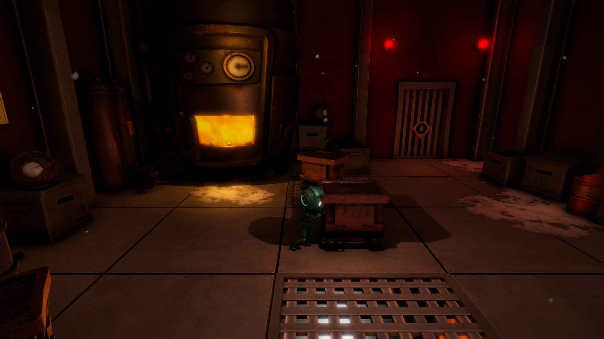

procedural asteroid generator
art-directed procedural generation with houdini and unreal engine.
art-directed procedural generation with houdini and unreal engine.
image processing and desktop interface experiments in python.
a fast local multiplayer prototype made during a game jam.
a compact game prototype built around timing, atmosphere and simple interaction.

development and gameplay programming for a 2.5d puzzle-platformer for windows, played with a ps4 controller.

systems that turn authored rules into playable layouts.